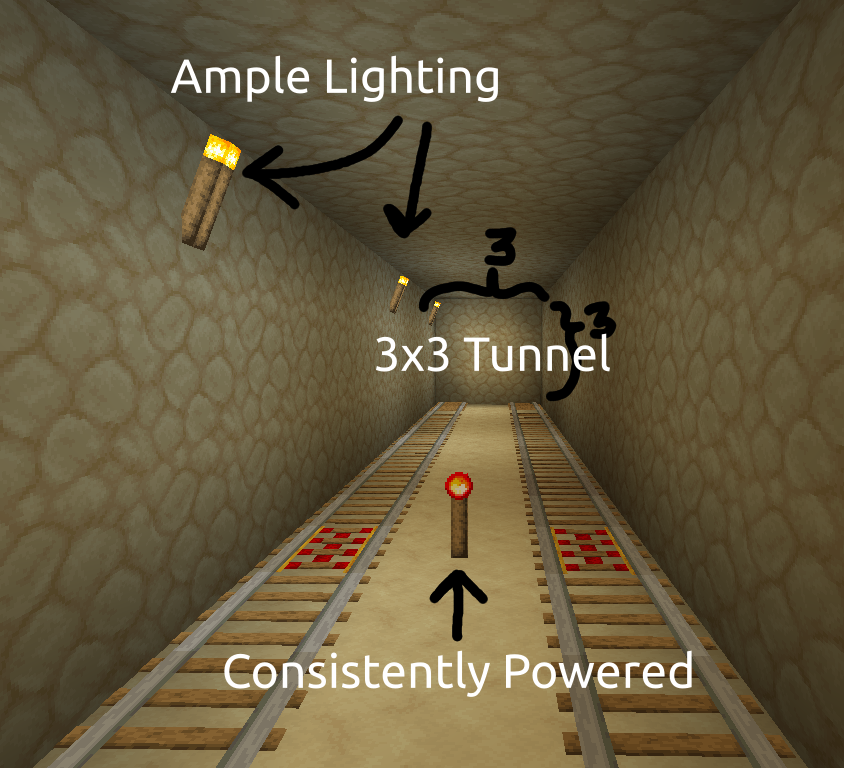
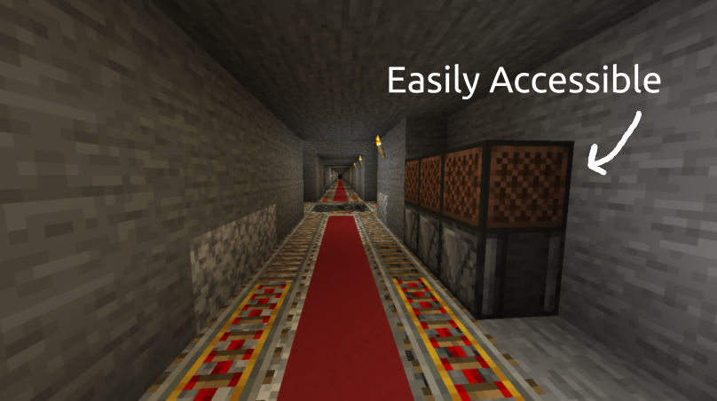

Minimum Requirments
Tunnels must be at least 3x3
There must be ample enough lighting that mobs do not spawn and users can properly interact with subway systems
There must be at least 1 powered rail for every 25 rails of regular rails

Intersections must be built that the default condition for a straightaway is to go straight, and the default condition for a spur onto a straightaway is to go right.
There must be a readily visible and easily accessable set of noteblocks that people punch at intersections to change their path.
